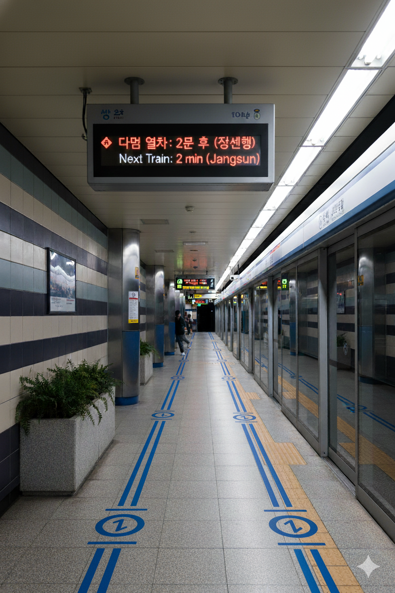
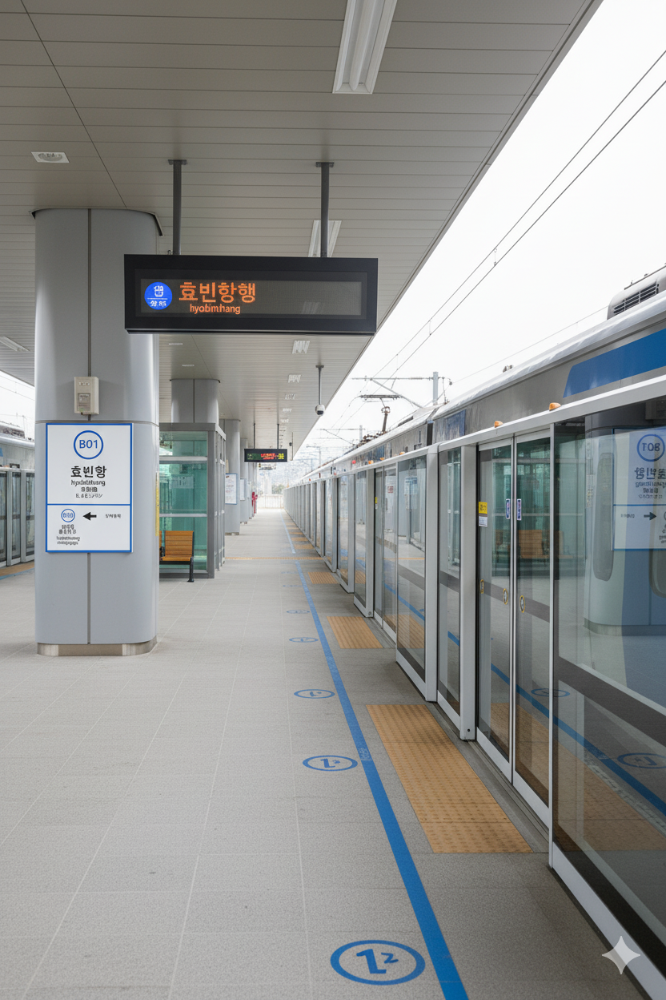

효빈항역(도시철도)
1. 개요
효빈 도시철도 1호선 108번 및 효빈 도시철도 7호선 706번, 빈효선 광역전철 B01번. 효빈광역시 남구 항동3가 1213 소재이다.
2. 역 정보
효빈시 대중교통의 핵심 요충지로, 1호선, 7호선, 빈효선이 만나는 거대 환승역이다. 인근에 효빈항 여객터미널과 일반열차 효빈항역이 위치해 있어 육해공 교통의 중심지 역할을 한다.
2.1. 역출구 정보
|
1
7
빈
효빈항역 출구 정보
|
||
|---|---|---|
| 번호 | 주요 시설 및 방향 | 비고 |
| 1 | 효빈항역 행복주택 | |
| 2 | 효빈항역삼거리 | |
| 3 | 빈효광역, 일반열차 효빈항역 | |
| 4 | 7호선 효빈항역 환승 | |
| 5 | 7호선 효빈항역 환승 | |
| 6 | 7호선 효빈항동부역 | |
| 7 | 1호선 효빈항역, 일반열차 효빈항역 | |
| 8 | 한국해양물류발전협회, 해양환경공단 효빈지사 | |
3. 승강장
1호선 (지하 2층)

1호선 승강장 전경
| 남구청 ↑ | ||||
| 하 | ㅣ | ㅣ | ㅣ | 상 |
| ↓ 효빈 | ||||
| 상 | 1 효빈 도시철도 1호선 | 창선·곽암해수욕장 방면 |
| 하 | 1 효빈 도시철도 1호선 | 장선 방면 |
7호선 (지상 1층 노면)

7호선 승강장 전경
| 효빈성앞 ↑ | |||
| 하 | ㅣ | ㅣ | 상 |
| ↓ 중앙고등학교 | |||
| 상 | 7 효빈 도시철도 7호선 | 중보로·어간중앙 방면 |
| 하 | 7 효빈 도시철도 7호선 | 효빈대입구 방면 |
빈효선 (지상 2층)

빈효선 승강장 전경
| 시종착역 | |||||
| ㅣ | 하 | ㅣ | ㅣ | 상 | ㅣ |
| ↓ 효빈항물류지구 | |||||
| 상 | 빈 빈효선 광역전철 | 중보로·어간중앙 방면 |
| 하 | 빈 빈효선 광역전철 | 효빈대입구 방면 |
4. 역 이용객 통계
| 효빈항역 이용객 통계 | |||||
|---|---|---|---|---|---|
| 연도 | 1호선 | 7호선 | 빈효선 | 총합 | 비고 |
| 2020년 | 13,298명 | 3,407명 | 12,338명 | 29,043명 | |
| 2021년 | 13,446명 | 3,586명 | 12,476명 | 29,508명 | |
| 2022년 | 15,636명 | 3,775명 | 14,507명 | 33,918명 | |
| 2023년 | 15,911명 | 3,974명 | 14,762명 | 34,647명 | |
| 2024년 | 16,191명 | 4,183명 | 15,021명 | 35,395명 | |
5. 연계 교통
- 효빈항역 (순방향): 59, 69, 90, 492, 591, 592, 691, 692
- 효빈항역(건너편) (역방향): 95, 96, 90-1, 942, 951, 952, 691, 692
6. 기타
- 효빈시 대중교통의 최종보스: 지하 깊숙한 곳을 달리는 1호선, 지상의 도로를 누비는 7호선(트램), 그리고 광역 수송을 담당하는 빈효선이 한 큐에 만나는 거대 환승역이다.
-
이 때문에 역 구조가 3차원 미로 수준으로 복잡하다. 초행길인 사람이 1호선에서 내려 7호선으로 갈아타려다가 빈효선 승강장으로 잘못 들어가서 강제로 타지 여행을 떠났다는 괴담이 전설처럼 내려온다.(...)
여기서 길 잃으면 바다로 간다. - 환승 통로의 길이가 서울의 모 역들 저리 가라 할 정도로 길다. 특히 7호선(지상) ↔ 1호선(지하 3층) 환승은 거의 등산 코스 수준이라, 에스컬레이터 고장 시 강제 하체 운동이 확정된다.
-
서브컬처 성지 (1): Roselia의 영지
역명에 들어가는 '항(港 - 항구)'이 일본어로 '미나토(Minato)'라고 읽힌다는 점 하나 때문에, 《BanG Dream!》의 밴드 Roselia의 보컬 미나토 유키나(Minato Yukina)의 성지로 추앙받는다.
팬들은 바닷바람이 부는 역 광장에 서서 Roselia의 노래를 들으며 "전부 걸겠어(すべてを賭ける)..."라고 중얼거리는 의식을 치른다.지나가던 어르신: "뭐에다 건다는겨? 도박인가?"
인근의 탄미역(탐미주의 컨셉)과 함께 Roselia 팬들의 필수 순례 코스로 묶인다. 실제로 역사 내 카페에서는 보라색(로젤리아 이미지 컬러) 음료가 유독 잘 팔린다고 한다. -
서브컬처 성지 (2): 제독과 지휘관들의 항구
'항구'라는 특성상 《벽람항로(아주르 레인)》나 《함대 컬렉션》 같은 함선 모에화 게임 유저들에게도 의미 깊은 장소다.
대형 선박이 정박하는 효빈항이 바로 앞에 있어, 실제 배를 배경으로 자신의 '최애 함선 소녀' 굿즈를 놓고 사진을 찍는 오타쿠들을 심심찮게 볼 수 있다.
빈효선 개통 기념일이나 해군 행사가 있는 날이면, 제복 코스프레를 한 팬들이 역을 점령하여 마치 코믹월드를 방불케 한다. -
낭만과 현실의 괴리
1930년대부터 운행한 고풍스러운 7호선 트램이 항구의 석양을 배경으로 지나가는 모습은 그야말로 낭만 그 자체다. 철도 동호인들의 단골 출사지이기도 하다.
하지만 출퇴근 시간(RH)에는 1호선과 빈효선에서 쏟아져 나온 환승객들이 트램을 타기 위해 좀비 떼처럼 질주하는 '효빈행 부산행'을 찍는다.(...) 낭만은 개뿔, 살기 위한 몸부림만 있을 뿐이다. -
빈효선의 기점
효빈시와 타 지역을 잇는 빈효선 광역전철의 시발역(기점)이다. 덕분에 자리에 앉아가려는 눈치 싸움이 치열하다.
주말 밤 막차 시간이 되면, 타지에서 효빈시로 성지순례를 왔다가 돌아가는 팬들이 양손 가득 굿즈 보따리를 들고 빈효선 승강장에서 꾸벅꾸벅 조는 진풍경이 연출된다.
7. 각주
- 각주 내용 1